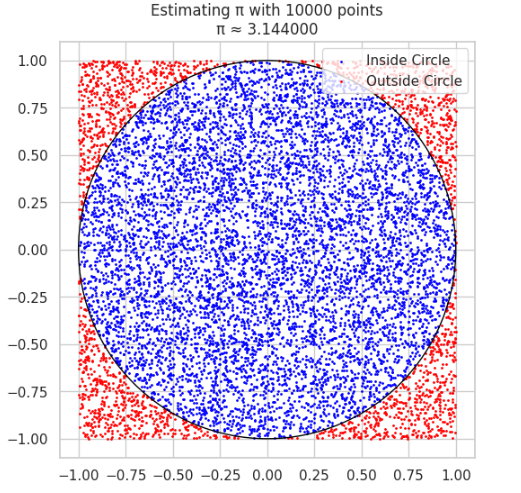

Estimating \(\pi\) Using Monte Carlo Methods
Introduction
Monte Carlo methods use randomness to solve problems that may be deterministic in theory. A classic example is estimating the value of \(\pi\) using either geometric probability (random points in a square) or Buffon's Needle experiment. Both methods demonstrate how probabilistic simulations can approximate mathematical constants.
PART 1: Estimating \(\pi\) Using a Circle
Theoretical Foundation
We inscribe a unit circle (radius = 1) inside a square of side length 2 (from -1 to 1 on both axes). The area of the circle is:
The area of the square is:
If we randomly generate points within the square, the proportion that falls inside the circle approximates the ratio of the areas:
Thus, we estimate:
Python Simulation
 ```python import numpy as np import matplotlib.pyplot as plt
def estimate_pi_circle(n_points): x = np.random.uniform(-1, 1, n_points) y = np.random.uniform(-1, 1, n_points) inside_circle = x2 + y2 <= 1 pi_estimate = 4 * np.sum(inside_circle) / n_points
# Visualization
plt.figure(figsize=(6,6))
plt.scatter(x[inside_circle], y[inside_circle], s=1, color='blue', label='Inside Circle')
plt.scatter(x[~inside_circle], y[~inside_circle], s=1, color='red', label='Outside Circle')
circle = plt.Circle((0, 0), 1, color='black', fill=False)
plt.gca().add_patch(circle)
plt.gca().set_aspect('equal')
plt.title(f'Estimating π with {n_points} points\nπ ≈ {pi_estimate:.6f}')
plt.grid(True)
plt.legend()
plt.show()